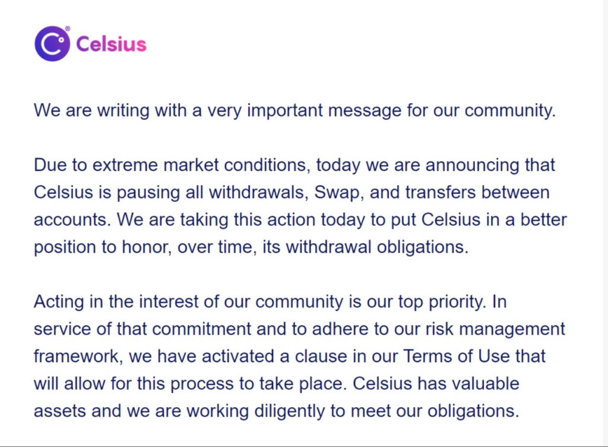
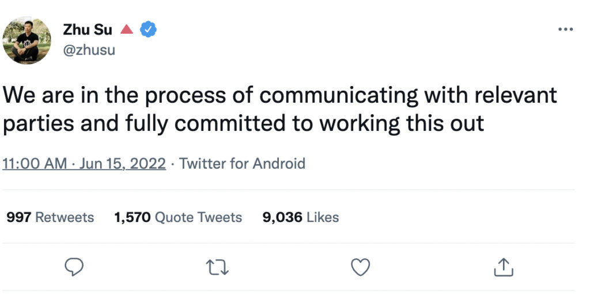
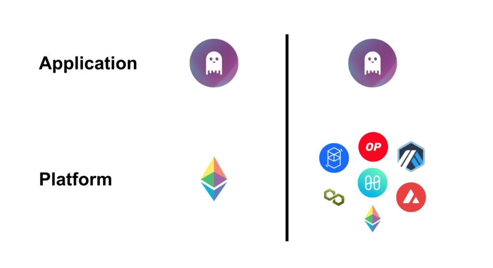

categories
All Categories
- Bitcoin
- Centralised Exchanges
- Crypto
- Crypto Asset Volatility
- Crypto Correlations
- Crypto Governance
- Crypto in the Portfolio
- Crypto Valuations
- DeFi
- ESG
- Ethereum
- Investment Highlight
- Regulation
- Security and Privacy
- Social Media Influence
- Stable Coins
- Traditional Finance and Crypto
- Uncategorized
- UNSDG
- Web 3.0
Authors
All Authors

DeFi Stability
by Matthew Harcourt
The crypto asset market is experiencing the most turbulent times in the market’s history. Various large centralised institutions are becoming insolvent, with each week passing more news comes to light of trouble market players. In this article, we will outline how these centralised entities have harmed the market through excessive risk-taking behaviour performed in a non-transparent fashion. We will then look at how transparent DeFi protocols have performed throughout these volatile times providing examples with crypto assets held by Apollo Capital, showcasing their consistent market demand through generating consistent cash flows for liquidity providers and token holders.
Centralised Finance (CeFi) Troubles
Celsius is a CeFi platform that offered investors lucrative interest rates on their crypto assets held on the platform. The business was founded in 2017 and enjoyed explosive growth in the years that followed due to their widespread marketing and general ease of use for retail investors. According to their website, Celsius was managing US$11.82 billion in assets (17 May 2022) and had processed US$8.2 billion in loans, making them an important crypto market participant for many years.

Celsius’s Announcement to their Users on the 12th of June 2022
On 12 June 2022, Celsius announced that it was suspending “all withdrawals, swaps and transfers between accounts”. The freezing of customers’ assets caught many users off guard, as they viewed Celsius as a reliable and safe way to store their crypto assets as advertised on their social media, website and via referral partners. Also portrayed in their messaging were their safe and reliable yield generating practices which lead users to believed Celsius generated the yield for their customers through direct crypto lending and conservative DeFi practices. In reality, they were undertaking riskier business practices to earn this yield, with no transparency on their procedures and strategies. Some mainstream media outlets have previously labelled Celsius as a DeFi platform along with the various referral partners on social media. However, this was simply not the case – as DeFi protocols provide complete transparency and on-chain verification.
With the Celsius platform, user deposits are treated as a liability on the balance sheet, similar to a bank. The platform’s underlying profitability depends on its ability to take these deposits and earn a higher yield than they are required to pay depositors. With insufficient demand from the market for direct crypto loans, CeFi platforms allocate their assets into DeFi protocols and staking to meet their yield targets. The key events that led to the insolvency of Celsius included losing 38,000 ETH to the platform ‘Stakehound’, losing US$54 million in the Badger DAO hack, general liquidity requirements mismanagement and large user withdrawals.
Although the full extent of the Celsius collapse is yet to be realised, it is the everyday user who suffers due to the risk-taking behaviour of a centralised entity. While hacks in DeFi can also be devastating for retail users, CeFi platforms have long engaged in marketing tactics that entice less sophisticated investors to utilise their products and carry the risk.
Risky Lending Practices – Three Arrows Capital (3AC)
Before its insolvency, Three Arrows Capital was a proprietary trading firm that earned a considerable reputation in the crypto market by making concentrated bets and securing enormous profits. They were highly sought after VC style investors in the primary markets and amassed US$10-15 billion in assets throughout the bull market. Their downfall was catalysed by enormous losses from the collapse of LUNA and the following broader market sell off. It is rumoured that 3AC’s debt could amount to around US$1 billion, with the flow on effects likely to have a lasting impact on both retail and institutional investors alike.
Founder of Three Arrows Capital, Zhu Su broke his Twitter silence with this tweet on the 15th of June.

3AC used their reputation to gain under-collateralised credit lines from risk seeking centralised lenders who were fiercely competing with each other, leading to irresponsible lending practices. It is reasonable to assume that many of these lenders would not have had a clear view into the balance sheet of 3AC. Whether that was through ignorance, fraud or a mixture of both, is up for speculation. The transparency offered by decentralised finance poses a stark contrast to these centralised entities. Smart contract enabled financial applications do not distinguish between users’ reputations, they are transparent pieces of code that simply keep functioning, day after day.
MakerDAO & DAI
MakerDAO is a great example of stability in the DeFi ecosystem despite the current market conditions and volatility caused by centralised entities and poorly designed crypto assets. After the Luna / UST collapse, one of our analysts spoke of the importance of MakerDAO and its over collateralised stablecoin DAI in an interview with Stockhead. MakerDAO has demonstrated the importance of decentralisation and thoughtful design in peer-to-peer networks.
Users can ‘mint’ DAI against the crypto asset collateral they choose to deposit into the protocol’s smart contracts. The amount of DAI minted by the user becomes a debt, repaying this debt by ‘burning’ the minted DAI plus interest unlocks this deposited collateral. DAI is pegged to the US dollar and is considered to be the most decentralised over-collateralised stablecoin. The decentralised aspect of DAI is an important reason that MakerDAO has been able to survive these market conditions and continues to flourish. The main reason for DAI’s decentralisation is because the collateral used to mint DAI are primarily the most decentralised crypto assets like ETH and BTC with the only requirement for a user to mint DAI being a crypto wallet, with no KYC needed.
The minimum collateral ratio that users are able to borrow for certain asset types is 130%, meaning if the user wanted to borrow 10,000 DAI, they must collateralise their position with at least $13,000 worth of ETH. Also known as the liquidation ratio, if the collateralised value drops below this number, the borrower will be subject to partial liquidation to cover outstanding debt, this comes with a liquidation fee of 13%. Due to MakerDAO’s transparency and being able to view all data on the blockchain, investors do not have to worry about misleading and unethical behaviour that stems from centralised entities who have hidden information from users.
Stability, Total Value Locked, Revenue, On-Chain Statistics
During the recent turmoil and volatility in the crypto markets, the DAI token has proven itself as a truly stable and trustworthy stablecoin. DAI uses what is known as a Peg-Stability Module (PSM) to ensure it has a 1:1 valuation with the US Dollar. The Peg Stability Module allows users to swap a given collateral type directly for DAI at a fixed rate, rather than borrowing DAI. The PSM contract allows users to swap other stablecoins such as USDC for DAI, making DAI’s peg very stable as any variation in the price can be arbitraged. The transparency and stability achieved through the implementation and reiteration of the protocol’s design over several years is a testament to the ultimate goal of Decentralised Finance.
We are able to look at other stablecoins such as UST and USDT when comparing the stability of DAI’s peg. However, DAI is the only decentralised stablecoin backed by on-chain crypto, which strengthens the support of its peg.
DAI/USD
DAI peg over 3 month period, showcasing strength and stability during Luna crash

UST/USD
UST peg over 3 month period, completely lost peg and stability during Luna crash

USDT/USD
USDT peg over 3 month period, momentarily losing peg during Luna crash

MakerDAO is currently trading at $1020 with a market cap of $1 billion and total value locked (TVL) of approximately $7.9 billion, which accounts for over 10% of the TVL in the entire DeFi space. The amount of BTC locked in the protocol is at an all time high with approximately 68,000 BTC locked (wrapped BTC on the Ethereum blockchain). With market conditions forcing some centralised companies into insolvency, MakerDAO has generated an annual total revenue of $34.9 million, and is one of the highest grossing DeFi protocols.
Aave
Aave is a highly renowned DeFi money market where users can supply and borrow crypto assets at an interest rate determined by the supply and demand of funds in the protocol. Aave is another major DeFi protocol that has survived the test of time while centralised lenders have caused disruption and uncertainty in the market. Aave is available across many layer one ecosystems such as Ethereum, Avalanche, Polygon, Fantom, Artbitrum, Harmony and layer twos such as Arbitrum and Optimism.
Due to the over-collateralisation mechanics of the Aave lending market as well as the community’s careful approach to only enabling highly decentralised and ‘safe’ crypto assets, there has never been a default case or ‘bad debt’ on the platform. The trust and stability of Aave are evident through its growth in user volume to $9.74 billion of liquidity locked across 7 networks and over 13 markets.

Aave – TVL, Revenue, On-Chain statistics
Aave has implemented many risk parameters to ensure the stability of the protocol. When market conditions change, risks change. Specific parameters include the loan to value and liquidation thresholds related to the risk of each of the assets available in the Aave protocol. A liquidation in Aave occurs when a borrower’s collateral value is not properly covering their loan/debt value, thus the user’s health factor falls below 1. To prevent these types of liquidations, Aave users are able to over-collateralise so that they can cover their debt and reduce the risk of their assets falling below their liquidation level. This has limited the number of liquidations that have occurred on the protocol and has encouraged more users to safely borrow on the protocol.
This year, the number of liquidations that have occurred on Aave’s protocol has totalled $24.2m. This number is very small compared to the total liquidation value this year of over $2 billion.
Lending Market Liquidations

AAVE is currently trading at $66.30 and has a market cap of around $920m with a Total Value Locked of approximately $6.75 billion, the second highest TVL out of any protocol in the DeFi sector. The lending protocol also has an annualised total revenue of $68.6m, which the majority is distributed to the lenders on the protocol who earn interest on the capital they lend.
Uniswap
Uniswap is the leading decentralised exchange (DEX) in DeFi. Unlike centralised exchanges and entities, Uniswaps transactions are all stored in the blockchain and are available for everyone to see – displaying their transparency and trust with its community. Using smart contract interactions, the protocol facilitates automated transactions between cryptocurrency tokens on the Ethereum blockchain. The protocol supports thousands of digital assets and stable coins across the Ethereum ecosystem and is crucial for the stability of the DeFi sector.
Uniswap recently surpassed $1 trillion in lifetime transaction volume, more than any other decentralised exchange. Uniswap liquidity providers earn a percentage of the transaction fees which incentivises them to provide liquidity – which is an example of the community engagement that is supported by decentralised entities. Despite the recent downdraws in the global markets, the transaction volume on Uniswap continues to rise and many new users are interacting with the protocol.
Uniswap – TVL, Revenue, On-Chains statistics
Uniswap reached an all time high valuation of $45 in May of 2021. It is currently trading at $5.68 and has a fully diluted market cap of around $5.14 billion. The TVL in Uniswap is approximately $5 billion , making it the 4th largest DeFi protocol in terms of TVL. Uniswaps exchange has generated an annualised total revenue of $750 million, making it the highest grossing DeFi protocol, with most of the revenue distributed to liquidity providers. The total revenue generated by the exchange is up 65.3% for the year, which illustrates the protocol’s stability and importance compared to many other centralised exchanges.
Monthly DeFi revenue

The global financial markets continue to shake the digital asset class and challenge the stability of the decentralised financial sector. However top protocols such as MakerDao, AAVE and Uniswap have proven that they can be successful and perform well despite the turmoil caused and exhibited by centralised entities. These are just a few of the top decentralised applications that continue to generate positive cash flows in a transparent manner for token holders and users.